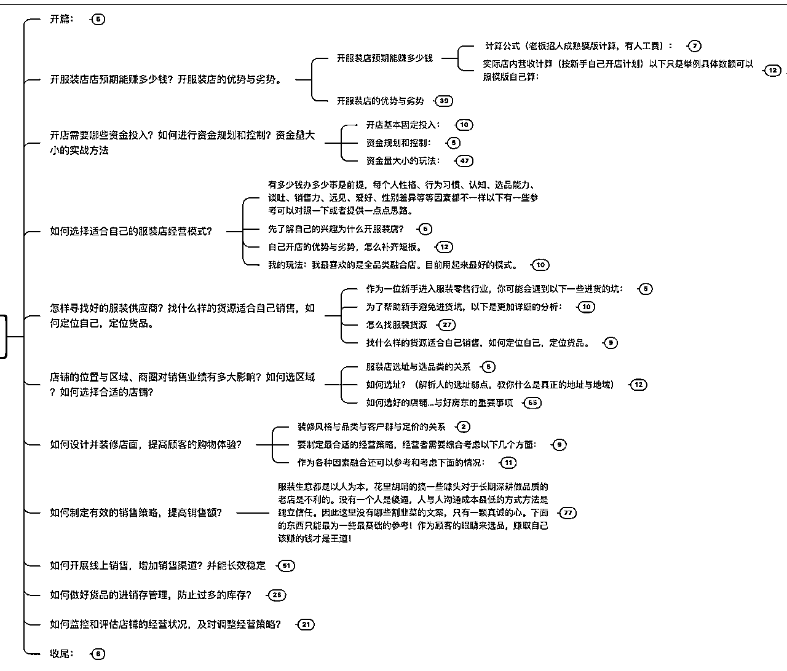

来源：https://fs4xcvw5u9.feishu.cn/docx/KxuIdMr5noo7oexcna1cbpgRnlh
风口过了，知识付费还值得做吗？
大家好，我是亚萨。
距离我发上一篇文，一年多了。当时离京去昆明，但没过多久就又决定出国，所以这段时间一直倒腾这个事。
现在全家在加拿大刚安顿下来。
我一直在做知识付费相关的业务。
但最近有不少人问到我，说大家都在说知识付费的风口已经过去了，还值得做不？
我认为是能做的，这个话题从三个方面来聊一下：
1、为什么还能做？
2、可以怎么做？
3、还能有哪些想象空间？
首先知识付费确实不如前两年好做了，一方面经济环境不好，另一方面是市场趋于成熟了，同质化产品多，用户对内容品质的要求变高。所以行业内也是唉声叹气。
回到上面的问题。
不好做的第一个原因，是所有行业要面对的，不仅是知识付费不好做，其他领域你去做一样会遭遇这个问题，用户花钱更谨慎了。没办法。
第二个原因，任何一个赛道趋于成熟，都会产生类似的情况。但衡量这件事该不该继续做的点，核心根本不在于竞争和品质。而在于需求。除非需求彻底消失或转变成其他形式，否则只要需求还在，那么就有生意在。
刚需的业务，进入成熟期，一定是高度竞争的。
所以，知识付费能不能做？可以做，但因为成熟了，所以不像之前那么容易做了。
就像餐饮、服装一样，这些领域能不能做？能做，但不容易做。
所以，知识付费有机会吗？
有，但要把它和其他成熟领域一样看待：
你能不能确定刚需？
能不能找到精准客群？
能不能把产品推销出去？
能不能把交付做好？
把市场最本质的东西做好，知识付费依然是一门好生意。
没风口了，只是回归正常，也无风雨也无晴。
为什么说它依然是一门好生意呢？
知识付费其实核心的逻辑是教育。是会一直伴随社会存在的事。它在近一些的时代，可以叫加盟；更远一些叫拜师学艺。
未来会有新的科技、新的场景、新的媒介。但对高品质信息的需求，一直会有。在这一点上，它做的也是刚需。
同时在当下还有几个看得见的优势：
低成本：
就个体而言，除了时间精力，知识付费的产品，几乎没有其他成本。
同时，对于整体环境下行的时期，极低的启动资金成本，对项目的启动、试错到迭代跑通，都是一个非常大的优势。
规模效应：
我们知道互联网有规模效应，业务体量越大，边际成本越低。
但这种业务，在之前往往需要研发技术的支持。
而知识付费的出现，是少有的，不需要研发技术就可以撬动互联网规模效应的产品。
这种形态，是比传统行业+互联网来做线上业务还要有优势的——所有可复用的环节，都不会因为销售端的压力，影响产能。
市场认知：
3年特殊时期，让大多数的用户接受了可以为知识付费。
现在买课，对大家而言是很正常的事了。
我在2014年就开始接触当时的知识付费业务，包括非常小众的收费群、直播课、以及做在线咨询的先驱“在行”。当时身边几乎没有人付费。
2016年被称为知识付费元年，用户的基本认知还是不太能接受为知识付费的。付费的用户，是在2020年开始暴增。
用户的认知，对行业的发展是决定性的。即便是同为内容的领域，认知上的不一样，也会导致结果有非常大的差异。
就拿知识付费课程和公众号付费文章来举例，同样是提供内容，前者在当下已经普遍被接受，而后者，除了小部分作者的粉丝有这个习惯，其实大部分人是不认可花钱买公众号文章读的。
原因在于，在用户的认知里，为“课程”交钱，是理所应当的，为“图文”交钱，则不然。
虽然二者本质上都是信息，只不过形式上有所差异罢了。
但这就是认知的威力。
总体来说，知识付费可以做，成本优势依然在，但商业上的要求变高。
产品要有质量，客户要够精准，销售要够专业。
说完能不能做，我再说一下，从我个人的视角来看，可以怎么做？
在新的阶段，之前热门的知识付费主题，普通人就不要尝试去碰了。
比如像商业思维等认知类的，还有软件使用技巧这种基础教学，以及各个领域偏理论的主题。
一方面是这些主题已经有很多同类型产品和团队在做了，另一方面，是整体经济下行的趋势下，不是刚需的主题，转化率有可能低到发指。
那么什么主题可以做？具体的行业解决方案。
这么说有点抽象，我举具体的例子来说。
我一个陪跑的项目，学员是在5线城市开服装店的哥们。做服装13年了，在当地开了两家服装店，一个男装一个女装，单店利润大概30w/年，佛系了5年，天天钓鱼。
深度沟通后，准备做小城市小规模的开店教学和1对1服务，找我陪跑。
课程刚做出大纲来，就预定了7 8个1对1的服务名额。
卖点就在于，他能够搞定，在4 5线小城市如何从0开好一家服装店，并且提供供应链支持。
现在的定价是8000元，1对1。看一下大纲，设想一下你是有需求的用户，有多大概率愿意花钱买这个服务？
从大纲的内容上来看，不是线上的风格，措辞各方面都很接地气。

而且一旦融合行业做解决方案，引流获客的内容也顺带着就搞了。
他现在已经在筹备第三家店，整个启动流程，核心的内容收集整理下来，做成内容的切片投放。
这个老哥也是佛不动了，想深耕一下本行业的事。这个事启动之后，几十万的钓鱼设备全送了。
这就是我要说的。
知识付费可以下沉、回归到更原始的形态，去赋能。这个模式有点加盟的影子对吧。
下文还会将另外一种更深度的衍生玩法。
同时，这位老哥其实在公域引流上，需要补强的。这又是一个绝对的刚需。只要有产品能做好交付，成交不是什么问题。
所以，不管是经济下行、还是风口已过。都绕不过市场规律啊！有需求，就有业务。
接下来要谈的，就是抓需求的问题。
这个阶段，一定要认清形势，放弃幻想。只做刚需！只做刚需！只做刚需！
怎么判断什么是刚需？
如果你做过一定时间的销售，那么你就一定会对哪些产品好卖有感知；也会知道如何和客户沟通推进销售流程。
但假设你没做过销售，想要定需求，千万别拍脑门，照抄是个不容易出错的思路，但大概率会抄个形似神不似，而且最重要的是，你如果对需求没有清晰的分析，你很难营销到点上，也很难完成成交。
所以，用产品设计常用的笨办法——用户访谈，去找刚需。与其说是找刚需，更贴切点是，从0开始去仔细认真的了解你要服务的群体。
之前的精华文推过做访谈的书。今天给大家一个我整理的工具表。供参考。
访谈10个用户，一定会对你自己最初的设想带来巨大冲击。
为了工具表能更直观的使用，我没清空案例。
具体怎么用这个表做访谈，参照下面的说明去做。一定要记住，如果你没有定准刚需的经验和直觉，最好还是用笨办法去做好访谈。因为现在没风口！没风口！没风口啦！刚需才能活下来。
一、访谈设计阶段的注意事项
二、邀约访谈用户注意事项
三、访谈前的准备
对访谈对象的信息，要有基本的了解；
提前准备好录音设备，方便结束后整理；
如果线上，提问者最好开视频表示尊重，以及可以用画面让对方更专注；
保证环境的安静和稳定，不让访谈受到干扰；
正式开始前，简单介绍自己的目标和访谈流程，帮助用户放松心情；
如果用户状态不好，可以沟通延期，不要勉强进行；
四、访谈开始后的注意事项
（大多数情况下，我们预设的用户痛点是不足的，所以要格外敏锐于用户自己提及的痛点内容，尽量多的收集。收集到的痛点越多，你的课程会越容易被他们识别出价值。）
以上就是找刚需的方法
第三个，之前热门的知识普及类，轻交付的课程，用户是比较泛的，交付一般也都通过录播课就完成了。
现在想深耕行业做重交付的话，一定要注重筛选你的学员。
因为你要和学员合作去成事，所以要对学员是否能够符合合作需求做判断。不要做无用功。
至于如何筛选，不同的行业有不同的标准和门槛，大家根据自身情况界定即可，我就不赘述了。
做完行业的解决方案，类似1对1服务这种产品，在知识付费领域还有哪些想象空间呢？
我想到的是两个维度去拓展。
当你开始做行业解决方案的时候，你吸引来的一定是行业内的伙伴。只要持续做，就会以你为枢纽形成一个行业平台。
不论规模大小，这个平台都可以获得给你提供更大的势能，和更多的可能。
简单设想一下，从产业链条的角度，你整合了某些环节，那么针对上下游就会获得更大的议价权和收益。或者更简单粗暴一些，就是做供应链走量的利润，也是一个方向。
如果嫌运营平台太累，也可以换一个方向，做深度。
深度拓展的模型，是之前提到的有别于加盟的，更古老的关系模型：师徒制。
在1对1的服务中，你会和学员建立一个实际的关系，就是师徒。
有了这种关联，业务拓展的过程中，就可以有更多的可能性。
比如针对优秀的学员提供更深度的合作空间，以投资占股的方式选择优质种子，做联营。
只要在股权的设计上做好充分的规划，其他的经营共识实际是一脉相承的。
合作风险会降到很低。会是非常香的一个模式。
风口过去，知识付费回归常态。我认为它的价值优势依然是在的。
首先是在系统知识的传递效率上，依然还是优选。
其次是在传统行业的应用，还远远没有饱和，包括最近也和忻忻一起合作搞了保险销售方面的课程，广阔天地，大有可为的。
但要求确实变高了，会劝退一些赶潮的人。
对我而言，知识付费是表现，它的内核是教育。值得坚持。